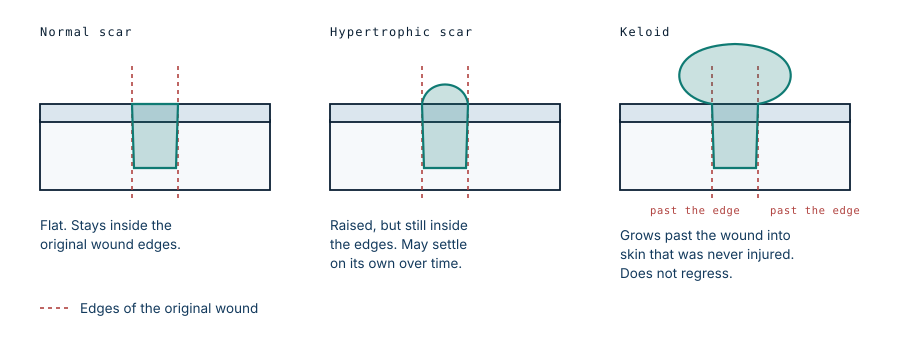

Keloid vs hypertrophic scar: fifteen years untreated
He walked away from the crash with flesh wounds on his jaw and thought he had been lucky. The hospital he went to was shut that day. Fifteen years later the scar had grown into a mass that hung down to his chest.
The crash
Leon was riding pillion on a friend's motorbike when the friend lost control weaving through oncoming traffic. Both men were thrown from the bike. His friend was badly hurt. Leon got up with cuts around his jaw and considered himself the lucky one.
He went to the nearest hospital. It was closed.
He had eight children, very little money, and no realistic way to keep travelling in search of care for what looked like superficial wounds. So he made the decision almost anyone would have made in his position: he let them heal on their own.
What healing did instead
Skin repairs a breach by laying down collagen, and the process is supposed to stop when the gap is closed. In some people it does not. Fibroblasts keep producing collagen after the wound has sealed, and the scar keeps growing.
The distinction that matters clinically is where the growth stops. A hypertrophic scar is raised but stays within the boundaries of the original wound, and it often flattens over months or years without treatment. A keloid ignores those boundaries. It spreads sideways into skin that was never injured, it does not regress, and left alone it can keep enlarging for decades.

Keloids most often appear between the ages of 11 and 30, and they are substantially more common in people with darker skin. They are not cancer and they are not contagious. They can itch, hurt, bleed, and ulcerate at the surface, and when they grow across a joint or the neck they restrict movement.
Fifteen years
Leon's grew from the jawline downward until it hung below his chin. He described the problem in practical terms rather than cosmetic ones: there were tasks on the farm he could no longer do, and using a chainsaw had become impossible because the mass was in the way. He also spoke about the isolation, saying that few people had any sympathy left, and that he had stopped feeling he was living his life and was instead only getting through it.
That is the part of a keloid that the diagram cannot show. A benign scar that nobody would call a disease had taken his work, his social standing, and fifteen years.
Treatment
A volunteer plastic surgeon on a charity hospital ship excised the mass, and the defect left behind was covered with a skin graft. Leon said afterwards that he felt lighter, and that the weight lifted was not only the physical one.
The surgery is the visible part, but it is not the whole treatment, and this is where keloids differ from most masses. Cutting one out is itself a wound, in a person whose skin has already demonstrated that it overproduces scar. Excision on its own has a high rate of recurrence, and the new keloid can be larger than the original. That is why excision is normally combined with something else — steroid injections into the site, pressure, silicone dressings, or in selected cases radiotherapy — and why the follow-up matters as much as the operation.
What this case teaches
Nothing about this outcome was inevitable. The injury was minor, and the biology of keloid formation is well understood and treatable early, when the scar is small and steroid injection or pressure therapy will still control it. What produced fifteen years of disability was a closed door on the day it mattered, and no realistic way to try a second time. Access is not a footnote to the medicine here. It is the entire difference between a scar and a disability.